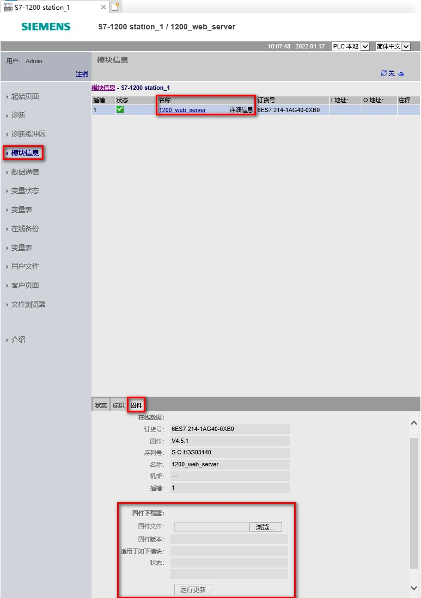
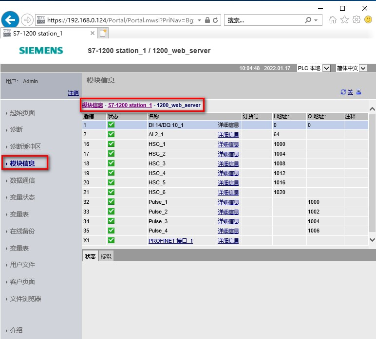

模块信息页面提供有关本地机架中所有模块的信息。
屏幕顶部显示模块的摘要，屏幕底部显示所选模块的状态、标识和固件信息。模块信息页面还提供执行固件更新的功能。
查看"模块信息"(Module Information) 页面需要"查询诊断"权限。
模块信息页面点击名称这一列，插槽 1，会在下方显示状态，标识及固件选项卡。如图 1 所示。
移动设备模块信息页面的"标识"(Identification) 选项卡上会显示"I 地址"(I address)、"Q 地址"(Q address) 和"注释"(Comment) 信息，而不是在主模块信息表中以列的形式显示这些信息。
模块信息页面的"固件"(Firmware) 选项卡显示所选模块固件的相关信息。在这里还可以执行固件更新，具体方法参见链接。

图 1.标准 Web 页面 - 模块信息
可以选择顶部的链接来深入展开特定模块的模块信息。具有子模块的模块包含每个子模块的链接。显示的信息类型会根据所选模块的不同而异。
例如，模块信息对话框最初会显示 SIMATIC S7-1200 站的名称、状态指示灯和注释。 如果深入展开 CPU，模块信息将显示 CPU 型号提供的数字量和模拟量输入输出的名称（例如"DI14/DO10"和"AI2"）、I/O 地址信息、状态指示灯、插槽号和注释等。

图 2.标准 Web 页面 - 模块信息-深入展开
在深入展开的同时，模块信息页面会显示访问的路径。可以单击该路径中的任意链接返回到更高级别（如图 2 所示）。